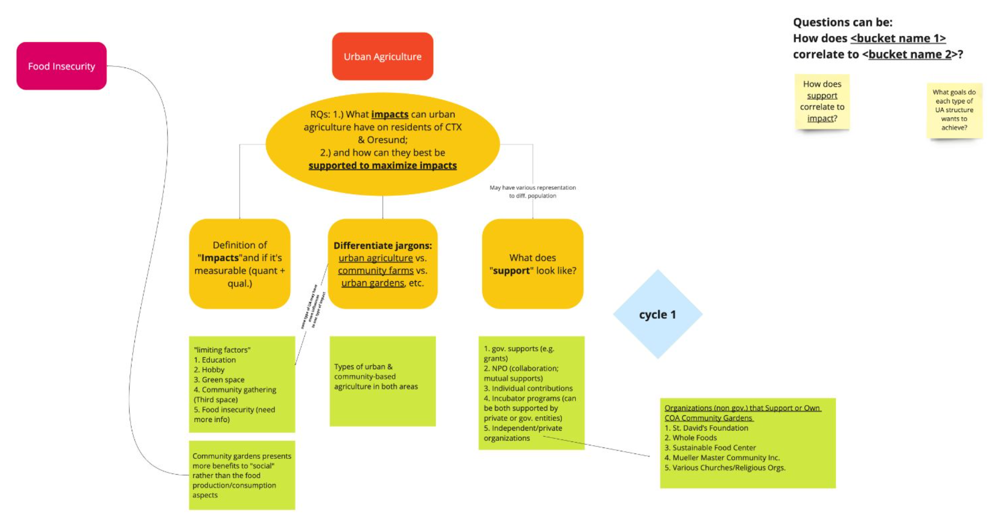

Research in Austin
To explore our questions, we engaged in service learning opportunities across Austin and interviewed people engaged in different points within the Travis County Food System. Our research was grouped in 3 cycles we will cover.
Cycle 1
To begin this cycle, we got an in-depth understanding of how food moves from farm to table in Travis county through the Austin Travis County Food Plan. We met with Amanda Rolich, current staff liaison in the Office of Sustainability for the Austin Travis County Food Policy Board. In our meeting, we learned about the work that goes into coordinating producers and the community, and got an in-depth explaination of the Austin Travis County Food Plan, which highlighted the strategies being taken to build a more sustainable and resiliant future.
Our first stops in observational research were Deep Eddy and the Conley-Geurrero Senior Activity Center. It was a cold day on our first stop to Deep Eddy and we were met by fences and nobody there. We walked around the outside and saw that the garden was well maintained, there were tarps over some of the vegetation and seats outside for volunteers or workers although currently nobody was there. This was our first big lesson in access to green spaces, since this site has certain hours where people can visit and interact with the greenery, this limits how community members can interact with the garden.


Next, we visited the Conley-Geurrero Senior Activity Center in east Austin. The center has a small garden that serves as a community space for the seniors. We were taken on an impromptu tour by [NAME]. We learned that the garden is in constant need of volunteers, although seniors engage and help maintain the vegetation, currently only [NAME] helps full time. She also informed us that the church [NAME] is a large source of funding for the center, and they want to expand their current green spaces once they acquire more funds.


Also during this cycle, Aaron visited the Muller Farmers Market, located outside downtown Austin. He saw the interactions between customers and producers and connected these ideas to the previously discussed food system. He saw that most items were expensive, and consumers only bought one or two things from the different stands. Overall, he assessed that farmers markets were a great way for small scale producers to reach their audience, however, pricing issues may make it difficult for the greater public to buy their products.
[Mia Interview]. Following our interview we headed to the Central Texas Food Bank. Here, we learned that at grocery markets in the United States, the look of the produce matters a lot and if they do not match certain aesthetics they are discarded. However, at the food bank, they will use all produce as long as it is safe to consume. We helped process potatoes from start to finish, from assessing the quality, to the packaging.


During this cycle, we began to see how social and political forces impact urban agriculture spaces. The Austin Food Policy Board has meetings open to the public and they engage with a lot of organizations in Central Texas. As land loss and funding are current issues for green initiatives in Travis County, new incubator farms and community gardens continue to rise to combat these problems. Finally, we noticed that accessibility is a large topic for urban gardens. Some community gardens we visited did not appear to be open to the community or were fenced off. We wondered how this impacted community members’ perception of the spaces and how they interact with them.
Cycle 2
At the end of this cycle, we decided to synthesize our findings so far and describe how urban agricultural spaces fit within the food system. Here, we highlight the different areas we have explored so far in central Texas and define some of the main themes we have seen so far. Some of the most significant limiting factors we saw so far were education of the public, time for the hobby, green space in the Travis county area, lack of community gathering spaces, and food insecurity. We also defined some of the different “support” aspects for these small-scale ventures. We have seen how the government can provide support through grants from the Senior Community Center.
Cycle 3
To kick off this cycle, we visited the Festival Beach Food Forest for a volunteer day. There were a lot of other young people ready to volunteer, some of which also went to UT. There was a wide range of jobs they had for volunteers, from helping dig holes for new irrigation channels to helping clean up the garden. While volunteering, we had a chance to talk to [NAME], who was a current part-time worker for the Food Forest. [NAME] informed us about a GIS project he was helping to create so that visitors to the space could see the variety of greenery in the forest. Another benefit of the project was that it could help secure grant money, he told us that there are many different kinds of grants that the forest can apply to and tracking relevant statistics is always an important challenge to tackle when trying to grow the site. During this time, we also started to look towards sites we wanted to research and people we wanted to interview in Scandinavia. Over the course of our trip, we were informed we would visit Copenhagen, Aarhus, and Samso, in Denmark, Oslo in Norway, and Malmo and Stockholm in Sweden. Mainly, we would stay in Copenhagen and Malmo with the other destinations as one or two day excursions. We closed out the semester with an entry into an on-campus research video competition and a live postering session during research week. Our video for the competition somehow came together in the span of 24 hours. We rushed to film and after Jane and Angela masterfully and quickly made edits to the final video and added stop motion animation. The video even earned us an “Arts, humanities, and social sciences” category honorable mention! We then presented the findings of our research so far at a postering session.